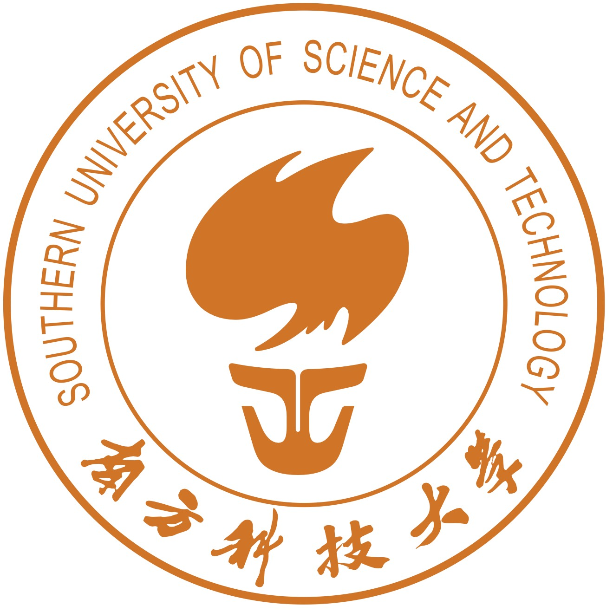

Shengcai LIU (刘晟材)
助理教授，博导
Tenure-Track Assistant Professor, Ph.D Supervisor
Department of Computer Science and Engineering
Southern University of Science and Technology
Office: Room 311, South Tower, College of Engineering
Address: No. 1088 Xueyuan Avenue, Shenzhen, China 518055
Email: liusc3 AT sustech DOT edu DOT cn
